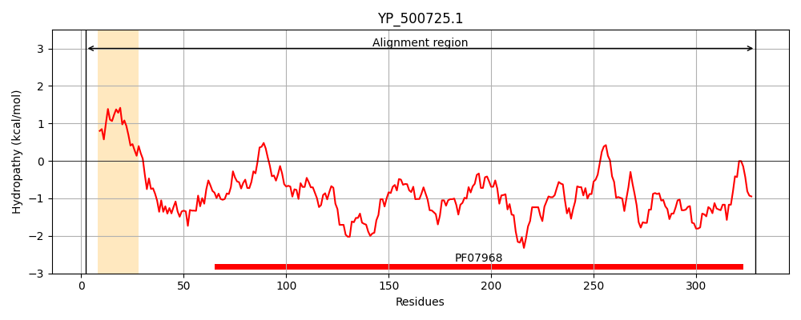
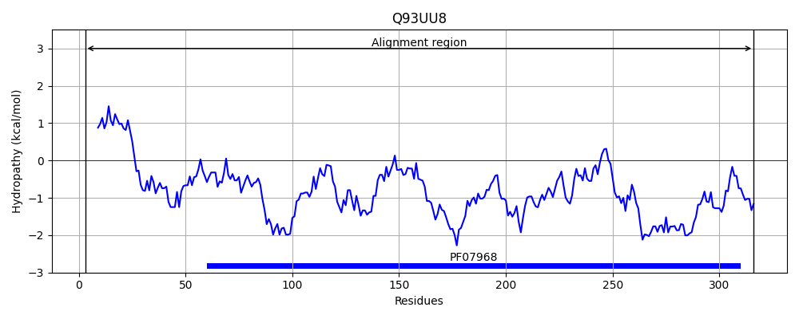
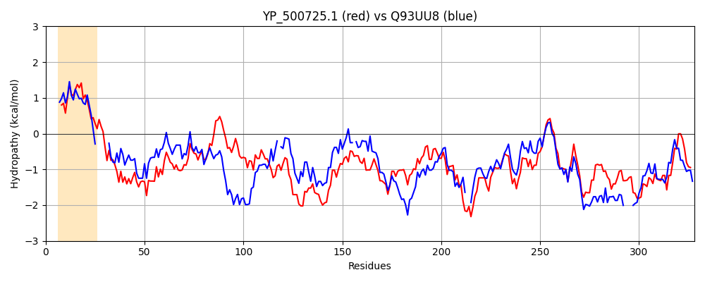

Hit Accession: Q93UU8
Hit TCID: 1.C.3.4.6
Hit Description: gnl|BL_ORD_ID|17352 gnl|TC-DB|Q93UU8|1.C.3.4.6 Beta-channel forming cytolysin OS=Staphylococcus aureus OX=1280 GN=lukNF PE=3 SV=1
Mach Len: 328
e:0.000000
Query TMS Count : 1
Hit TMS Count: 0
TMS-Overlap Score: 0.000000
Predicted Substrates:CHEBI:25367;molecule
BLAST Alignment:
Score: 585 , Bit scores: 229 bits, E-value: 1.7e-73, Alignment length: 328, Percentage identity: 38
Query: 2 IKQLCKNITICTLALSTTFTVLPATSFAKINSEIKQVSEKNLDGDTKMYTRTATTSDSQKNITQSLQFNFLTEPNYDKETVFIKAKGTIGSGLRILDPNGYWNSTLRWPGSYSVSIQNVDDNNNTNVTDFAPKNQDESREVKYTYGYKTGGDFSINRGGLTGNITKESNYSETISYQQPSYRTLLDQSTSHKGVGWKVEAHLINNMGHDHTRQLTNDSDNRTKSEIFSLTRNGNLWAKDNFTPKDKMPVTVSEGFNPEFLAVMSHDKKDKGKSQFVVHYKRSMDEFKIDWNRHGFWGYWSGENHVDKKEEKLSALYEVDWKTHNVKFV 329
+K+L K+ ++AL + A I VSEK +D +Y TAT+ + + NI+Q L FNF+ + +YDK+T+ +KA G I SG + +P Y S W G Y+VS+ + + N+ NV D+APKNQ+E +V+ T GY GGD +I+ GL+G + ++SETI+Y+Q SYRT +D+ T+HK +GW VEAH I N G + + D +E+F R + A NF P +MP+ FNPEF++V+SH + D KS+ V Y+R MD + WNR +W G N+ ++ ++ YEVDW+ H VK +
Sbjct: 3 MKKLVKSSVASSIALLLLSNTVDAAQ------HITPVSEKKVDDKITLYKTTATSDNDKLNISQILTFNFIKDKSYDKDTLVLKAAGNINSGYKKPNPKDYNYSQFYWGGKYNVSVSS-ESNDAVNVVDYAPKNQNEEFQVQQTLGYSYGGDINIS-NGLSGGLNGSKSFSETINYKQESYRTTIDRKTNHKSIGWGVEAHKIMNNGWGPYGR--DSYDPTYGNELFLGGRQSSSNAGQNFLPTHQMPLLARGNFNPEFISVLSHKQNDTKKSKIKVTYQREMDRYTNQWNRL----HWVGNNYKNQNTVTFTSTYEVDWQNHTVKLI 316 | Protein Hydropathy Plots: |
|---|
|  |  |
Pairwise Alignment-Hydropathy Plot:
|
|---|
|  |